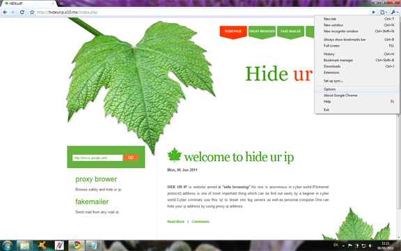
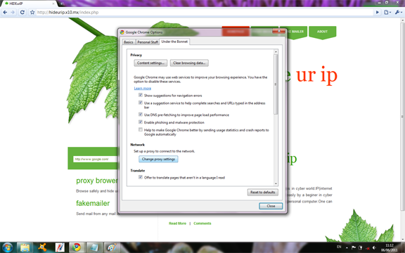
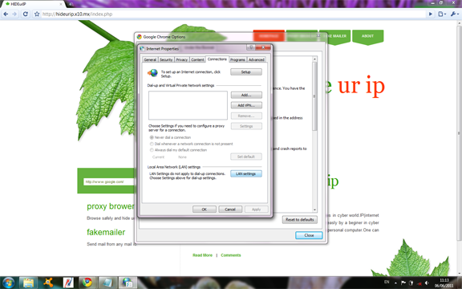
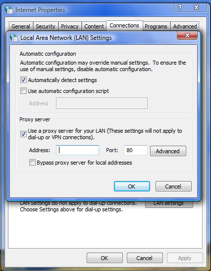

setting proxy In Google chrome
Under the tools menu select options
Under 'Under the hood' Menu,click on Change proxy Settings button
A pop-up window of Internet Setting will appear.Select LAN setting under Connections.
Select Proxy server.Insert proxy ip and port.
